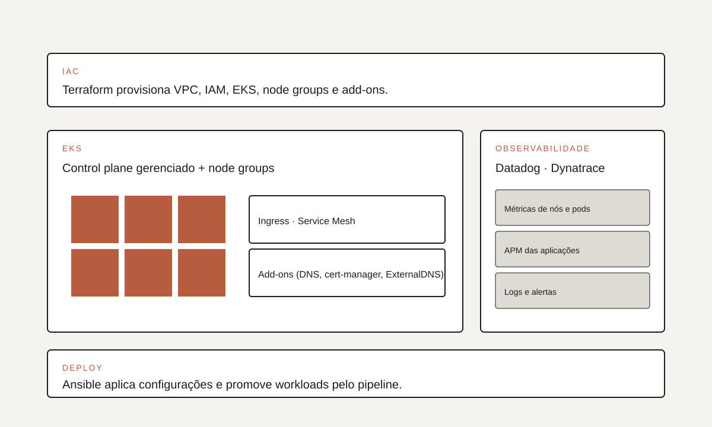
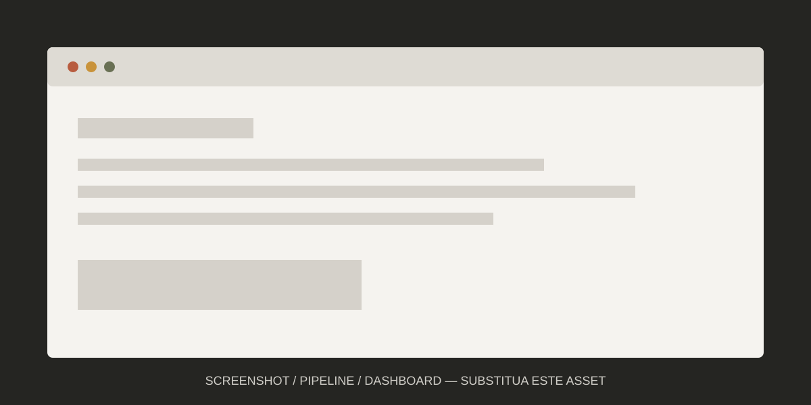

01 · Visão geral
Do zero a uma plataforma reutilizável.
O objetivo era mais do que subir um cluster: era criar uma plataforma reaproveitável, com IaC, deploy automatizado e observabilidade prontos antes das primeiras aplicações entrarem.
[Descreva o contexto de forma pública: qual era o cenário antes do cluster, quais aplicações eram alvo e por que Kubernetes fazia sentido.]
Aplicações crescendo sem uma plataforma de orquestração padronizada.
Cluster EKS provisionado por Terraform, com deploy via Ansible e observabilidade integrada.
Fundação reutilizável para workloads Kubernetes com curva de adoção mais suave.
02 · O desafio
Kubernetes com governança, não como experimento.
Precisávamos evitar o padrão de “cluster piloto que virou produção”. A primeira versão já deveria ter processos, monitoramento e um caminho claro para as squads consumirem.
“Primeiro cluster não pode ser primeiro erro — o modelo escolhido aqui será replicado depois.”
- Definir padrões de rede, IAM e node groups.
- Escolher stack de observabilidade e integrá-la desde o início.
- Estabelecer um pipeline claro de deploy.
- Documentar padrões para consumo por outras squads.
03 · Meu papel
Liderança técnica ponta a ponta.
Fui responsável por conduzir a construção do cluster, definir padrões e formar parceria com times de aplicação. Trabalhei muito próximo do time de observabilidade para acertar dashboards e alertas.
Arquitetura: desenho da VPC, cluster e integrações com outros serviços AWS.
Implementação: Terraform modularizado, playbooks Ansible e configuração de add-ons.
Adoção: onboarding das primeiras aplicações e transferência de conhecimento.
04 · Arquitetura
IaC, deploy e observabilidade lado a lado.
Terraform provisiona a base, Ansible cuida da configuração e do deploy, e Datadog e Dynatrace observam desde o control plane até as aplicações. Uma peça só, planejada como camadas.

assets/projetos/arquitetura-eks-alelo.svg.Componentes principais
Infraestrutura
VPC dedicada, subnets em múltiplas AZs, IAM roles específicas e KMS para criptografia.
EKS
Control plane gerenciado, node groups por perfil de carga e add-ons essenciais.
Deploy
Ansible orquestra a promoção controlada de workloads.
Observabilidade
Datadog e Dynatrace com dashboards por serviço e alertas por SLO.
05 · Implementação
Primeiro cluster, primeiros padrões.
Fizemos a implementação por incrementos, entregando valor a cada semana e refinando os padrões conforme conversas com os times de aplicação.
- 1
Base de rede
VPC, subnets, roteamento e endpoints privados.
- 2
Cluster EKS
Terraform provisiona control plane, IAM e node groups.
- 3
Add-ons
Ingress, DNS, cert-manager e observabilidade instalados por padrão.
- 4
Deploy
Playbooks Ansible promovem workloads pelos ambientes.

06 · Decisões técnicas
Escolhas para a primeira geração.
Escolhas conservadoras em favor de estabilidade, com espaço para evoluir. As alternativas foram documentadas para eventual revisão.
07 · Resultados
Fundação viva para os próximos clusters.
O cluster passou a servir como referência técnica interna. Os padrões definidos aqui foram reaproveitados nas próximas iterações.
Padrões técnicos reutilizáveis para novos clusters.
Onboarding mais previsível das primeiras aplicações.
Visibilidade end-to-end antes do primeiro incidente.
08 · Aprendizados
Documentar tanto quanto codar.
Padrões só viram cultura quando as pessoas conseguem encontrá-los e entendê-los rapidamente. O tempo investido em documentação retornou várias vezes.
- Observabilidade antes das aplicações, não depois.
- Modularização do IaC pensada para reuso desde o início.
- Documentação viva mantida junto do código.